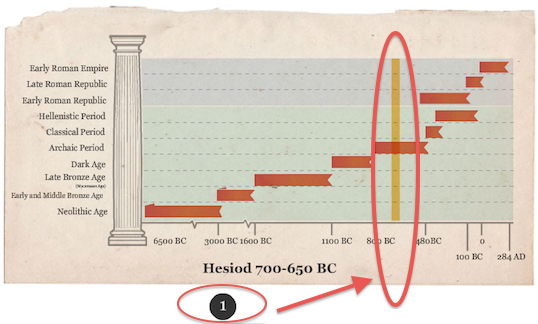

Description
The stories of Classical mythology helped the ancient Greeks and Romans to make sense of their world and to answer the fundamental questions of their humanity, such as existence, love, and death. Myths still inform our understanding of the world, and Classical mythology in particular has continued to influence Western art and literature up to the present day. This class begins with an examination of the ancient Greek understanding of the creation of the world, the pantheon of gods, and the creation of humanity. It then goes on to focus upon the gods and goddesses of Classical mythology, semi-divine heroes and heroines, and the interaction of these groups. Attention will be given to both the religious practices and the myths that surround the gods in the Greek and Roman traditions.
Course Conventions
This course is organized by Weeks. Each Week consists of 1-2 Modules. There are four Term Tests and a number of optional group discussions. Please check the course schedule for details concerning Term Test due dates.
You will notice a definite pattern to each Weekly module page. Objectives for each module provide weekly learning targets and give way to an historical timeline. Be sure to click on the numbers to visually locate what you will be reading during that particular week. (see screen shot below)

After a brief introduction you will notice Essential Element(s), Readings, and Resources. Each Essential Element provides information concerning the myths of the gods in the Greek and Roman traditions. Moreover, you will find details regarding gods and goddesses of Classical mythology, semi-divine heroes and heroines, and the interaction of these groups. Read the Essential Elements before you begin your readings for the week. Know, however that while studying you will most likely find yourself moving back and forth between Essential Elements and the text to provide for a richer learning experience.
It is recommended that you log on to the course site at least five times a week to work through course materials and to participate in course activities.
Logging in takes many forms and various amounts of time. For example, you might log in for 1 hour on one day to read Essential Elements; and/or you might log on for 20 minutes to post or respond to a Discussion Post.
You should plan on spending the same amount of preparation for “in-class” time on this course as you would if you were taking it on campus. That said, this course is reading intensive, be sure to plan ahead.
Objectives
By completing this course, students will:
- Acquire a fundamental knowledge of Greek and Roman mythology, and
- Improve their analytical and interpretative skills.
This online course was developed by Andrew Faulkner, with instructional design and multimedia development support provided by the Centre for Extended Learning.